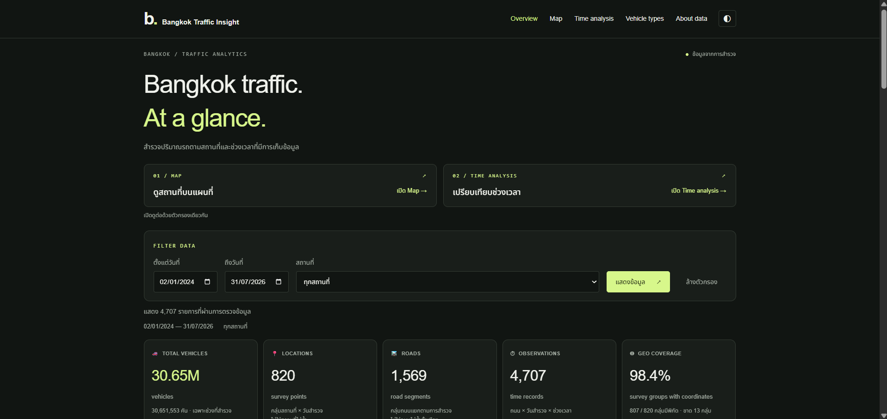

FEATURED DATA PROJECT
BKK Traffic Insight
Built a traffic analytics dashboard with Python, Flask, and MySQL to explore Bangkok traffic survey data by date, location, and observed time period.
Combined a data-cleaning pipeline with Chart.js visualizations and location comparisons to make survey records easier to explore and interpret.
KEY HIGHLIGHTS
- Cleaned and validated spreadsheet survey data before importing it into MySQL.
- Added date and location filters, traffic summaries, and comparison tables.
- Visualized observed traffic periods while explaining the dataset's coverage and limitations.
View project details +
From survey reports to insights
Based on Bangkok Metropolitan Administration traffic survey reports. Survey counts are historical observations, not live traffic or a direct measure of congestion.
Hosted on Render: the first load may take about a minute while the server wakes up.